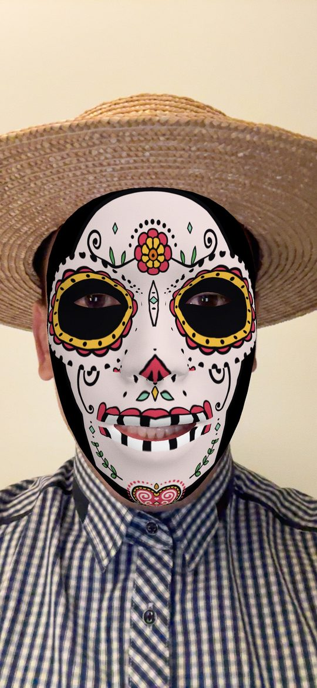
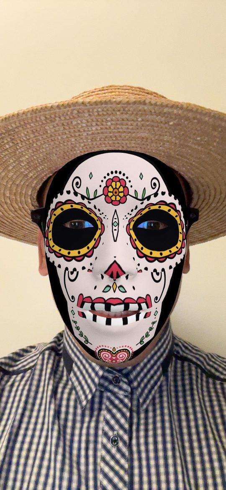
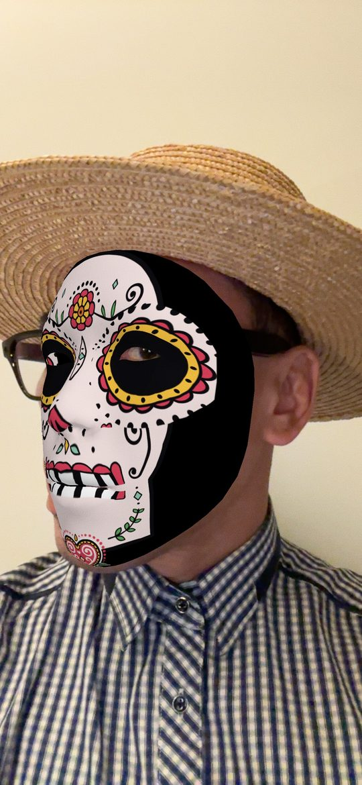
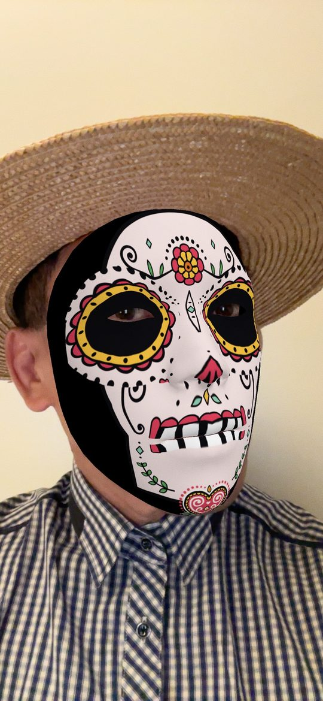

iPhone app
Calavera AR
Calavera AR paints a calavera on your face with the front camera. The mask follows your face, including when you wear glasses. Roll a new one, save a picture, or record a video.
Submitted to the App Store. It is not on the store yet.
On a call
Share your screen from the other app. The mask stays on the screen while you talk. Calavera AR does not run the call.
What stays on your phone
- The camera is used to draw the mask. The picture is processed on the device.
- The microphone is used only while you record a video, so the clip can include your voice.
- A picture or video is saved to your photo library only when you tap save.
- There is no account. Nothing is uploaded to us. We do not track you.
Privacidad
Calavera AR pinta una calavera en tu cara con la cámara frontal. La máscara sigue tu cara, también con lentes. La imagen se procesa en el teléfono. El micrófono se usa solo al grabar un video. Una foto o un video se guarda en tu fototeca solo cuando tú lo pides. No hay cuenta y no subimos nada.
Pictures




The launch picture
The launch picture is drawn from an engraving by José Guadalupe Posada.